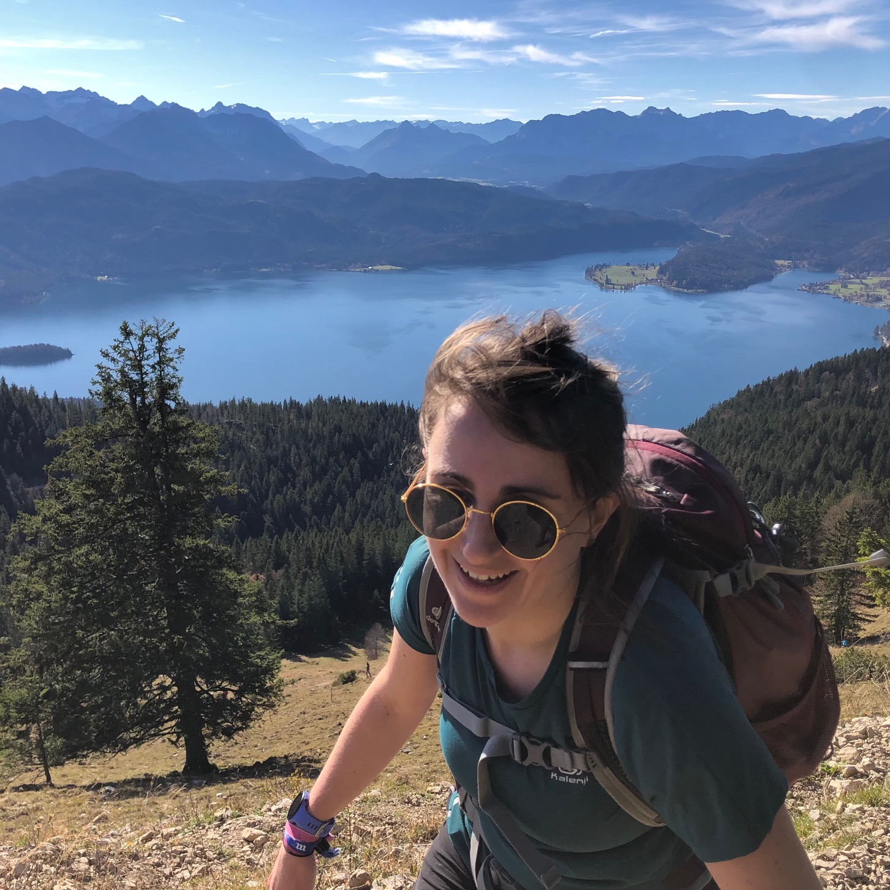

Rosalie Bruel

My research interests revolve around how aquatic ecosystems are
responding to local and global perturbations. In order to identify and
characterize (both quantitatively and qualitatively) major environmental
drivers, I work with a pluridisciplinary approach on lowland and
high-altitude lakes, at different spatial (local, regional, global) and
temporal (millennial to sub-hourly resolution) scales, and on different
responses (physical, chemical, biological).
I am a newly hired researcher at the French Biodiversity Agency (OFB). This is my personal research page, and what I have up here does not engage the responsibility of my employer.
My ORCID profile: https://orcid.org/0000-0001-8351-7539
https://orcid.org/0000-0001-8351-7539